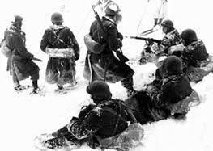

« Cet article se veut le juste témoignage d’une mémoire partagée de la fraternité d’armes franco-soviétique durant la Seconde Guerre mondiale. A travers ces lignes, l’auteur fait une fois de plus preuve de son attachement au devoir de mémoire qui le caractérise depuis de nombreuses décennies. Aussi cet épisode de l’histoire militaire est une bienheureuse initiative car son contenu a, entre autres, pour fin d’évoquer le parcours d’un résistant soviétique d’origine azerbaïdjanaise qui rejoint le maquis de Cabertat dans le Tarn-et-Garonne. Ce soldat de l’ombre se nommait Ahmadiyya Jabrayilov, plus connu en France sous le nom d’Akmed Michel, ou de son pseudonyme « Kharko ». Intégrant le 1er Groupe d’escadrons du 3ème régiment de hussards des Forces Françaises de I’ Intérieur, lui et ses camarades incorporent les rangs de la Division Légère de Toulouse en aout 1944 qui ensuite partie du Groupement Mobile du Sud-Ouest et Centre du colonel Jean Schneider. Son parcours militaire l’amènera lui et ses compagnons : aux portes du Morvan, en Côte d’or, dans le massif des Vosges et enfin en Alsace. Engagé volontaire de la 1ère Armée de Lattre au sein du 2ème corps d’armée du général de Monsabert, Akmed Michel poursuivra la lutte, et combattra au grès des impératifs opérationnels, avec le 1er Groupe d’escadrons du 3ème RH-FFI aux côtés des plus prestigieux régiments de la célèbre 3ème Division d’Infanterie Algérienne du général Guillaume. C’est grâce à son héroïsme et celui de ses compagnons maquisards que notre pays a pu s'arracher à l’Occupation et redevenir lui-même. »
Stéphane GALARDINI Président de l’UGF
Avant-propos
J’ai choisi de retracer le parcours des hommes des maquis de Cabertat et d’Ornano jusqu’à leur épopée dans les Vosges et en Alsace de 1944 à 1945. A la veille des deux débarquements, et jusqu’à la libération du département, ils prendront part à de nombreuses opérations contre l’occupant.
En effet, les maquis de Cabertat et d’Ornano avaient accompli une tâche considérable pour la libération de nombreuses communes dans le Sud-Ouest. C’est un thème particulièrement intéressant d’autant qu’à travers le récit du 1er Groupe d’escadron du 3ème régiment de hussards FFI c’est aussi celui d’Akmed Michel que l’on partage à la lecture de cet article. Considéré à juste titre, par les autorités azerbaïdjanaises et françaises, comme un membre avéré de la France résistante ; il n’existait curieusement aucun ouvrage en langue française retraçant le parcours de maquisard et d’Esterhazy Houzards d’Akmed Michel.
Leurs actions ne peuvent être valablement appréciées que si l'on est en mesure d’imaginer les conditions qu'imposaient les agissements de l’omniprésente Gestapo, de la Feldgendarmerie et de la Milice de Vichy. A ce titre, Akmed Michel et ses camarades du maquis de Cabertat avaient quotidiennement à craindre des représailles et des actes de « nettoyage » de la part de toutes les unités de la Wehrmacht et de la SS cantonnées dans le Sud-Ouest. Une fois la région délivrée en août 1944, Akmed Michel rejoint en septembre avec ses camarades du maquis le 1er Gr. d’esc. du 3ème RH FFI. Akmed Michel sera de toutes les missions et prolongera sa démarche combattante en s’engageant en octobre 1944 pour la durée de la guerre. Ce court récit révèle également la page oubliée et inexplorée de l’histoire du « 3ème régiment du Hussards – ou Esterhazy Houzards » durant la Seconde Guerre mondiale. Pour faciliter la lecture de cette étude, il m’est paru nécessaire d’employer, dans un premier temps, son pseudo « Kharko » pour évoquer sa période de maquisard puis de récupérer son patronyme d’« Akmed Michel » pour faire la césure à compter de son engagement volontaire au sein de la 1ère Armée française.
À la fin de l’année 1943,
Akmed Michel fait partie d’un convoi à destination de la caserne Burloup à Rodez
La division « Das Reich »
En avril 1944, une effroyable unité SS prend ses quartiers à Montauban et ses environs, c’est le tristement célèbre SS Panzergrenadier Regiment 4 « Der Führer » de la 2. SS Panzer Division, Das Reich. Après avoir combattu sur le front de l'Est dès 1943, il vient se reformer dans la région afin d’être rapidement disponible pour intervenir contre un éventuel débarquement sur la côte atlantique, craint par le Haut commandement de la Wehrmacht. La répartition de ces unités SS consolide temporairement le dispositif allemand de la zone sud.
Connue pour sa valeur combative, ce régiment SS l’est également pour sa brutalité et son extrême cruauté. Face à la prolifération des « Banden » (c.à.d. des résistants et maquisards) le combat contre la Résistance a dorénavant, pour les troupes d'occupation allemandes, la même priorité que la lutte contre les troupes alliées et c’est dans ce contexte que la Wehrmacht et la SS opèrent contre les maquis. A la suite du Débarquement allié du 6 juin 1944, d’importants éléments de la division SS Das Reich partent rejoindre le front de Normandie. Cependant des effectifs conséquents demeurent encore quelques temps dans la région pour maintenir l’ordre, car les activités des mouvements de résistance se sont accrues.
« Kharko » rejoint le maquis
Après avoir pu s’échapper de son internement, recherchés par la Wehrmacht et la Sipo/SD, « Kharko » membre de l’armée soviétique parvient à rejoindre le maquis de Cabertat dans le Tarn-et-Garonne courant mai 1944. Étant donné que chaque combattant compte, « Kharko » est ardemment accueilli au sein de cette troupe de maquisards. Par son expérience avérée de soldat de l’armée soviétique, il est un atout précieux pour ses nouveaux frères d’armes.
« Dans l'accomplissement de mon devoir envers la patrie soviétique, je m'engage à servir honnêtement et fidèlement les intérêts du peuple français, sur la terre duquel je protège les intérêts de ma patrie. Je soutiendrai mes frères français de toutes mes forces „ Déclaration solennel de A. Michel en 1944 au maquis. In : Rovchan Agayev, Les cours de langue française, Ed. Baku 2019, p. 24.
Conjointement à l'accroissement des sabotages ferroviaires, « Kharko » et le maquis de Cabertat, ainsi que les autres mouvements de maquisards du Sud-Ouest, agissent ainsi sans l’aide d’aucun gros renfort militaire allié. Mais la Wehrmacht et les SS commencent à se ressaisir et déclenchent de meurtrières opérations de chasse contre les maquisards. Les combats dans le Sud-Ouest font rages entre FFI et troupes allemandes, alors que les Alliés en Normandie progressent difficilement vers l’est. Devant la recrudescence des actes de sabotages, l’occupant et la milice ne veulent laisser ces forfaits impunis et les services du Sipo/SD comptent sur l’aide de délateurs français pour découvrir et surprendre les maquisards dans leurs tanières.
La répression allemande est féroce et prend plusieurs formes : intimidations et démonstrations de force, pillages et terreur, violentes opérations de police, attaques de maquis, arrestations de résistants, prisonniers déportés ou fusillés, incendies d'habitation et déportation d'otages. Malgré les risques encourus par « Kharko » et ses compagnons du maquis, la poursuite les actions de harcèlement continuent. « Kharko » et ses camarades comptabilisent de nombreux accrochages à leur actif. De leur côté le Sipo/SD et la Milice ne cessent de poursuivre et traquer les maquisards de Cabertat afin de les éliminer.
Le débarquement de Provence et ses conséquences
Le 15 aout débute le débarquement en Provence. Les mouvements de résistance ne sont pas en reste et tous les maquis, dont celui de « Karkho », se lancent dans de nouvelles opérations de guerre afin d’empêcher les troupes allemandes de la région de rejoindre le front méditerranéen. La situation militaire devient alors intenable pour les unités de la Wehrmacht. Suivant les ordres reçus, il leur faudra coûte que coûte rejoindre leurs troupes qui sont déjà en retraite dans la vallée du Rhône en direction du nœud routier et ferroviaire encore libre. Mais, c’était sans compter sur les maquisards de la région (dont ceux de Cabertat) qui n’ont qu’un seul mot d’ordre : empêcher les troupes allemandes de pouvoir exécuter cette manœuvre de désenclavement et libérer les villes et les communes sous le joug nazi. Poursuivis par tous les maquis, dont celui de Cabertat, les premiers éléments à fuir de Montauban, entre le 16 et le 18 août, sont les éléments de la Milice et de la Gestapo. Après la libération de Montauban, pas de relâchement pour « Kharko » et les maquisards de Cabertat car la guerre n’est pas pour autant terminée.
Serge Asher, alias « Ravanel » chef régional des FFI décide de poursuivre la lutte contre les nazis au-delà des limites de la région. Il veut créer une « division de maquisards ». Grâce à sa réputation il réussit l’exploit de mobiliser plus de 7800 hommes. Rapidement rassemblés puis encadrés, tous ces volontaires fournissent le socle pour constituer la Division Légère de Toulouse. Pour commander cette masse considérable, « Ravanel » désigne nul autre que son commandant départemental des FFI du Tarn : le colonel Redon alias « Durenque ».
Le cas du 1er groupe d’escadrons du 3ème régiment de Hussards FFI
« Kharko », et une majorité de ses camarades du maquis du Cabertat, s’engagent au titre du 1er Groupe d’escadron du 3ème hussards FFI. Là, ils se trouvent sous les ordres du commandant Marcus ; un des anciens chefs d’état-major de l’Armée Secrète dans la région. Dans le but de prendre le contrôle de la DLT, le GPRF désigne Maurice Chevance alias « Bertin » résistant chevronné du Mouvement de la Libération Nationale. C’est en provenance d’Alger que le 28 août 1944 Maurice Chevance débarque à Toulouse accompagné du colonel Jean Schneider, officier de la coloniale qui avait précédemment commandé des unités spéciales en Afrique du Nord. Tous les éléments de la DLT sont immédiatement subordonnés à une nouvelle et grande formation aux ordres du colonel Schneider. Cette nouvelle formation prend le nom de Groupement Mobile du Sud-Ouest et du Centre (ou GMSOC) et va accroitre ses effectifs par l’arrivée d’autres grandes unités FFI. Entre temps « Ravanel » reçoit du Bureau Central de Renseignements et d'Action, instruction de mettre incessamment en place des unités de combat afin de poursuivre les troupes allemandes qui décampent en direction du Morvan pour atteindre L’impatience est à son comble chez « Kharko » et ses camarades de Cabertat, qui se préparent à quitter le Tarn-et-Garonne dans les meilleures conditions possibles.
En ce mois de septembre 1944, « Kharko » et les hommes du groupement FFI sont informés qu’ils sont officiellement affectés comme « groupement de reconnaissance » au sein de la DLT (également désignée sous le nom de Colonne R4 FFI-Toulouse). Le 9 septembre « Kharko » embarque dans un train à destination du Morvan.
Décize et Autun
Durant leur présence dans le Morvan « Kharko » et le 1er Gr. d’esc. auront comme mission « interdire l’accès à la région aux colonnes allemandes venant de Nevers (…) ». Ordre a donc été donné au 1er Gr. d'esc. qu’en face de toute colonne ennemie, qui pénètre dans la zone défensive, de l’arrêter et de la disloquer.
Chaque unité reçoit sa zone d’action et le « (…) Le 3ème Hussards se portera à Decize et opérera dans la forêt des minimes ». « Kharko » prend une part active aux opérations tendant à pourchasser l’ennemi et sera engagé dans le dispositif défensif-offensif, face à l’ouest.
L’intervention du 1er Gr. d’esc. est caractérisée par la profondeur des opérations de reconnaissance sur plusieurs kilomètres. La mobilité des FFI du 1er Gr. d’esc. et de ses hommes, bien qu’ils ne disposent que d’un matériel vétuste, est extrême du fait de la légèreté d’une troupe aguerrie au combat du maquis.
En conséquence, les hussards comme toutes les unités du GMSOC, soit isolément ou en corps constitués, ont apporté un précieux concours dans les combats pour la Libération d’Autun et des environs.
Dans les Vosges et en Alsace
La conduite réussie des opérations, entre les unités FFI et les régiments de l’Armée B à Autun, marque le début des actions qui sont menées par le général de Lattre et de son État-Major pour accélérer l’intégration définitive des FFI dans le dispositif de son Armée. En priorité sont retirés des effectifs FFI, les hommes possédant une qualification convertible au sein des unités de l’armée. Le 4 octobre 1944 « Kharko » signe avec enthousiasme son Engagement Volontaire pour la Durée de la Guerre (plus trois mois- selon la formule consacrée) comme combattant du 1er Gr. d’esc. du RH de la 1ère Armée française. « Kharko » - désormais redevenu Akmed Michel- prouve à ses chefs sa détermination à vouloir poursuivre la lutte contre les nazis. Par leur engagement, les FFI volontaires comme « Akmed» permettent de remplacer les contingents d’Afrique noire durant l'automne 1944. Assignée dans l’ordre de bataille de la 1ère Armée, il ne fait plus aucun doute à « Akmed » et les « anciens » FFI du Tarn-et-Garonne, que l’heure semble être enfin venue de monter pour le front. Les combats des maquis et l’accrochage d’Autun n’ont été pour eux qu’un premier jalon pour la voie de la Libération de la France. Les vœux de « Akmed » semblent se concrétiser car le 1er Gr. d’esc. est avisé de sa subordination au 2ème CA dans la perspective proche d’un rattachement à une unité combattante. Le 1er Gr. d’esc. va affronter l’ennemi dans une zone de combat hostile, mêlant sentiers escarpés et cols abrupts, là où les Allemands savent à merveille utiliser les sombres forêts de sapins vosgiennes et où la pluie n’a cessé de tomber depuis des semaines. Le groupe passe désormais sous les ordres du général Duval, actuellement en charge du secteur de Cornimont et la mission consiste à occuper et tenir les bois dans la proche périphérie de Cornimont sur le Haut-du-Faing. Le Groupe sera rattaché au célèbre 6ème régiment de tirailleurs marocains. Pour la zone de responsabilité incombant au 6ème RTM, la Wehrmacht a récemment renforcé son dispositif par l’affectation des 291 et 292. Panzergrenadier Battaillon. Du côté français, le 6ème RTM est encadré au nord par le 2ème groupe de tabors marocains et au sud par le 3ème régiment de tirailleurs algériens.
Ahmadiyya Jabrayilov (avec fusil) avec ses camarades en France pendant la Seconde Guerre mondiale. Une photo a été publiée dans l'article sur Jabrayilov dans Bakinskiy rabochiy (1966). L'original se trouve dans sa maison-musée à Shaki.
La Wehrmacht dans les Vosges
Bien que la 1ère Armée française eût fait sa liaison avec le VIth Allied Army Group, et malgré les premières victoires acquises par les franco-américains ; les unités de la Wehrmacht tiennent encore les crêtes Vosgiennes.
Malgré leurs pertes effroyables, les troupes allemandes poursuivent la lutte avec acharnement contre les éléments de la 3ème Division d’infanterie Algérienne car le Reich n'est pour les troupes franco-américaines plus qu'à une centaine de kilomètres de distance. Conscient de l’enjeu, et au fils des mouvements de troupes et de la situation fluctuante du front, les unités de la Wehrmacht et de la Waffen-SS vont défendre chèrement leurs positions. Les ordres du Führer sont formels, il leur faut tenir coûte que coûte, dans l'espoir de gagner du temps. Les unités élémentaires de la Wehrmacht opérant dans la future zone de combat de nos hussards, loin d’être démoralisées se montrent encore et toujours aussi agressives.
Commandant la 19. Armee, le General der Infanterie Friedrich Wiese, reçoit l’ordre de Adolf Hitler de retarder l’avancée des troupes alliées et de tenir ses positions sur l’ensemble du massif des Vosges j avant de relancer une nouvelle contre-offensive qu’ils espèrent victorieuse.
Pour se faire, l’Oberkommando des Heeres aligne des troupes supplémentaires, et désormais bien campées, sur une ligne de défenses naturelles pour interdire l’accès aux routes et aux crêtes qui avaient été réaménagées entre temps. Les vallées vosgiennes sont comblées d’unités bien dotées en armes collectives et soutenues en arrière par des batteries d’artillerie, et truffées d’une multitude d’abris, de champs de mines, de fossés antichars, de nids de mitrailleuses, de postes de canons lourds et de mortiers…
D’octobre 1944 à janvier 1945, « Kharko » et ses compagnons du 1er Groupe d’escadrons du 3ème régiment de Hussards FFI affrontent l’ennemi dans une zone de combat hostile, mêlant sentiers escarpés et cols abrupts, là où les Allemands savent à merveille utiliser les sombres forêts de sapins vosgiennes et où la pluie n’a cessé de tomber depuis des semaines.
Les variations de terrains et les dénivelés abrupts, avec des sommets de plus ou moins mille mètres à gravir, semblent un environnement plus propice à des chasseurs alpins qu’à des hommes habitués au maquis du Tarn-et-Garonne.
Outre la nature inhospitalière du massif des Vosges en période de combat, peu ou mal équipés, « Kharko » et le 1er Groupe d’escadrons devra appréhender des troupes allemandes aguerries et une météo particulièrement déplorable. Alors que les tirs d’artillerie prennent temporairement fin, c’est le temps des tentatives d’infiltration allemandes dans les lignes. Constamment des patrouilles ennemies tentent la nuit de s'approcher silencieusement des positions françaises, dont celles du 1er Gr. d’esc. Ils seront au même titre que leurs frères d’armes les victimes d’incessants matraquages d’artillerie ennemis. Les sections de combats du groupe d’escadrons combattent au fils des opérations de guerre aux côtés des unités d’élite de l’armée d’Afrique comme le 7ème régiment de tirailleurs algériens, le 7ème régiment de chasseurs d’Afrique, le 2ème régiment de spahis algériens et le 12ème tabor. Outre le Haut du Faing, « Kharko » et ses camarades participent aux actions offensives en direction de Wildenstein, du col d’Oderen et de Kruth et participeront activement à la Libération des Vosges et de l’Alsace.
Par leur présence sur cette partie du front occidental les unités françaises de la 3ème DIA fixent de nombreux éléments de la Wehrmacht, qui ne sont alors pas en mesure de dégarnir cette partie du front pour soutenir l’offensive des Ardennes. Aussi les engagements militaires de « Kharko » et des hussards continuent inlassablement comme celles des autres unités voisines dans des conditions physiques très dures.
Travaillant sans relâche à organiser un terrain aussitôt abandonné, engagé sous-bois ou dans les villages dans des combats de détail mais souvent très meurtriers, « Kharko » et les anciens maquisards formés et durcis par le climat et les combats, rivalisent d’endurance, de calme et de bonne humeur et surmontent les difficultés. Après avoir rempli leur devoir, le Groupe FFI est retiré du front pour participer à la refondation du 3ème régiment de Hussards récemment recréée.
Le 2 mars 1945 « Akmed » et les hommes du Tarn-et-Garonne vont publiquement incorporer le 3ème régiment de hussards et se défaire de leur « identité FFI de la 1ère Armée ». Aussi, une certaine excitation secoue tous nos hussards car chacun doit méticuleusement préparer sa tenues et son arme en vue de faire honneur à leur colonel et aux personnalités invitées. A l’occasion d’une modeste prise d’armes, le 1er Gr. d’esc. de Montauban va définitivement disparaitre pour renaitre de ses cendres sous la nouvelle appellation de 4ème escadron décidé par le colonel Nérot.
Épilogue
Après que l’Allemagne nazie signe le 8 mai 1945 l’acte de capitulation mettant fin à la guerre. Pour « Akmed, » ce n'est malheureusement pas un « cessez le feu » hurlé en plein combat qui annonce la fin des hostilités mais il l’apprend prosaïquement par une allocution radiodiffusée du Général de Gaulle. Son imagination a espéré un dénouement plus héroïque, mais l'évènement conserve suffisamment d'importance pour qu’il s'emploi aussitôt à célébrer dignement, comme dans toute la France, cette journée heureuse au milieu de l'allégresse générale.
Nous supposons qu’« Akmed », après une opération de contrôle de la commission soviétique et malgré l’accueil qui l’attend de la part des autorités soviétiques, est sans doute enjoint par son régiment de rejoindre un de ces camps pour retourner en URSS. Nous n’avons aucun renseignement quant aux modalités de fin de service militaire actif et toute supposition à ce sujet, sans attestation, ne portent que sur des hypothèses. A l’instar de bon nombre de ces concitoyens soviétiques ayant combattu en France. Ce retour fait suite à l’accord conclu entre la France et l’Union soviétique. Dès son retour au pays, il deviendra la victime de l’ostracisme du NKVD affectant tous les combattants et prisonniers de guerre soviétiques ayant lutté à l’étranger et soi-disant « contaminés » par les capitalistes occidentaux. Ainsi, Akmed Michel ne sera pas considéré comme un « partisan » mais plutôt comme un traitre et en tant que tel, son passé de combattant « français » sera effacé durant des décennies de toute reconnaissance civile ou militaire en URSS…comme en France.
Akmed Michel sera non seulement victime de la répression stalinienne mais également de l’ineptie de l’administration française d’après-guerre ; qui délaissera bien vite ses résistants « étrangers ». Outre les privations, la torture et autres brimades, s’ajoute l’interdiction pour « Akmed » d’établir des contacts avec ses anciens compagnons de lutte. Ce ne sera que plus de 30 ans plus tard qu’il aura l’opportunité de se rendre en France pour retrouver certains de ses camarades sur Montauban. Bien qu’ayant rempli mon objectif mémoriel, en ayant pu sortir de l’oubli ces hommes du 1er Gr. d’esc. FFI du 3ème RH et Akmed Michel cet article s’expose assurément aux oublis involontaires ou à d’éventuelles erreurs ; mais n'ôte absolument rien à l’intérêt du sujet.
Partager cette page